🏛️ कक्षा 10 राजनीति विज्ञान (लोकतांत्रिक राजनीति-2)
अध्याय 3: जाति, धर्म और लैंगिक मसले (Gender, Religion & Caste) - संपूर्ण मास्टर नोट्स (20 विज़ुअल्स)
लोकतंत्र में सामाजिक विविधता का पहला महत्वपूर्ण आयाम लैंगिक विभाजन (Gender Division) है। लैंगिक असमानता कोई जैविक (Biological) नहीं, बल्कि समाज द्वारा बनाई गई रूढ़िवादिता और पितृसत्तात्मक व्यवस्था (Patriarchy) की उपज है।
श्रम के लैंगिक विभाजन का अर्थ है कि समाज ने काम का ऐसा बंटवारा कर दिया है जिसमें घर के सारे अंदरूनी काम (खाना पकाना, सफाई, कपड़े धोना और बच्चों की देखरेख) औरतों के जिम्मे डाल दिए गए हैं और बाहर का काम पुरुषों के जिम्मे रहता है:
- अवैतनिक श्रम की उपेक्षा: औरतें दिन भर घरेलू काम में खटती हैं, लेकिन उनके श्रम का कोई आर्थिक मूल्य नहीं आंका जाता और न ही उसे समाज में उत्पादक माना जाता है।
- काम की प्रकृति: ऐसा नहीं है कि पुरुष घरेलू काम नहीं कर सकते। जब उन्हीं कामों के पैसे मिलते हैं (जैसे बड़े होटलों में रसोइया या दर्जी का काम), तो पुरुष इसे खुशी-खुशी अपना पेशा बना लेते हैं।
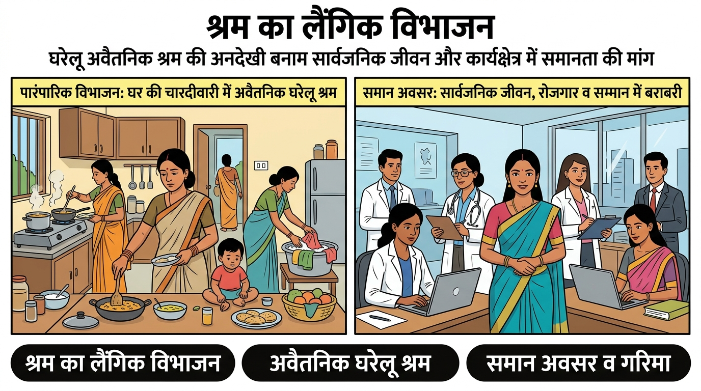
👩🍳 चित्र 3.1: श्रम का लैंगिक विभाजन (Sexual Division of Labour)
घर की चारदीवारी में अवैतनिक घरेलू श्रम की उपेक्षा बनाम आधुनिक सार्वजनिक जीवन और कार्यक्षेत्र में महिलाओं की बराबरी।
NCERT पुस्तक (पेज 41) का प्रसिद्ध कार्टून दिखाता है कि एक भारतीय महिला का कार्य-दिवस सुबह 5 बजे से लेकर देर रात तक बिना रुके 16-18 घंटे चलता है।
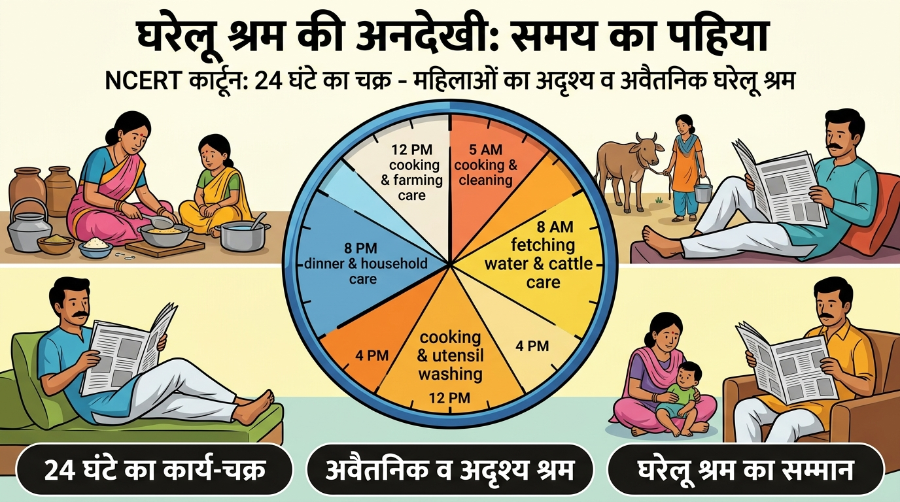
⏰ चित्र 3.8: NCERT कार्टून - समय का पहिया (24-Hour Routine Clock)
सुबह 5 बजे से रात 11 बजे तक अनवरत अवैतनिक श्रम का चक्र बनाम पुरुषों का खाली समय।
समान पारिश्रमिक अधिनियम, 1976 (Equal Remuneration Act) यह कानून गारंटी देता है कि समान काम के लिए महिला और पुरुष को बराबर मजदूरी दी जाएगी। लेकिन जमीनी हकीकत में कृषि, खेल, सिनेमा और असंगठित निर्माण क्षेत्रों में महिलाओं को उसी काम के लिए पुरुषों से कम मजदूरी दी जाती है।
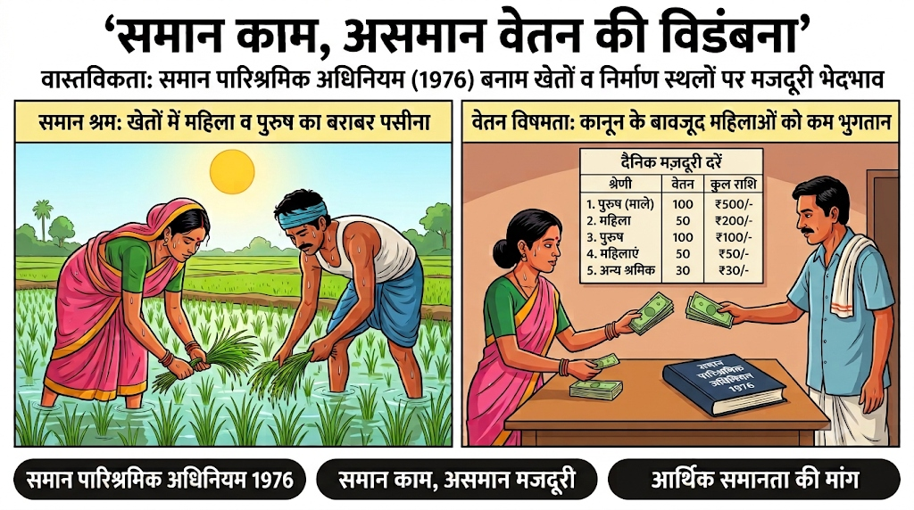
🌾 चित्र 3.10: समान काम, असमान वेतन की विडंबना (Equal Remuneration Act 1976)
खेतों में रोपाई और कटाई में बराबर पसीना बहाने के बावजूद शाम को भुगतान मेज पर महिलाओं को कम मजदूरी का अन्याय।
पुत्र-मोह और कन्या भ्रूण हत्या के कारण भारत में 2011 की जनगणना में बाल लिंगानुपात (0-6 आयु वर्ग) गिरकर मात्र 919 रह गया। इसके समाधान के लिए सरकार ने प्रसव-पूर्व लिंग निर्धारण पर प्रतिबंध (PNDT Act) और 'बेटी बचाओ, बेटी पढ़ाओ' अभियान चलाया है।
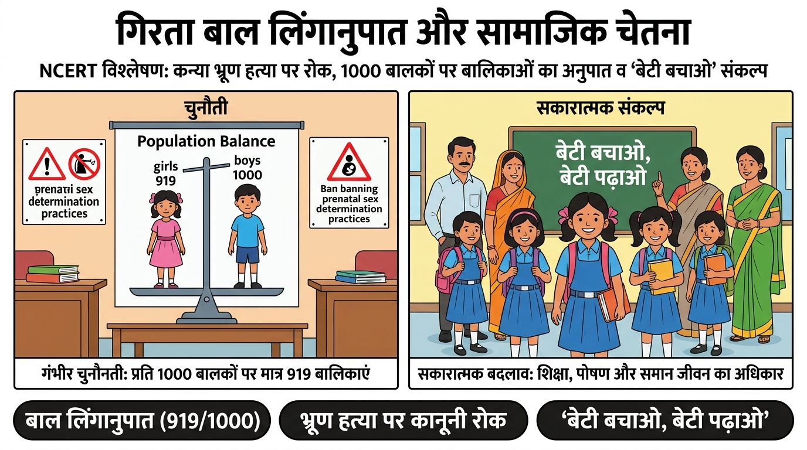
📉 चित्र 3.9: गिरता बाल लिंगानुपात और 'बेटी बचाओ' संकल्प (Child Sex Ratio)
प्रति 1000 बालकों पर मात्र 919 बालिकाओं की गंभीर चुनौती बनाम शिक्षा, स्वास्थ्य व कानूनी सुरक्षा।
💡 'नारीवादी' की NCERT परिभाषा
नारीवादी (Feminist): कोई भी महिला या पुरुष जो स्त्री और पुरुष के समान अधिकारों और समान अवसरों में विश्वास करता है, उसे नारीवादी कहा जाता है।
नारीवादी आंदोलनों ने मांग की कि महिलाओं को केवल वोट का अधिकार ही नहीं, बल्कि शिक्षा, रोजगार, संपत्ति में अधिकार और घरेलू हिंसा से पूर्ण सुरक्षा मिलनी चाहिए।
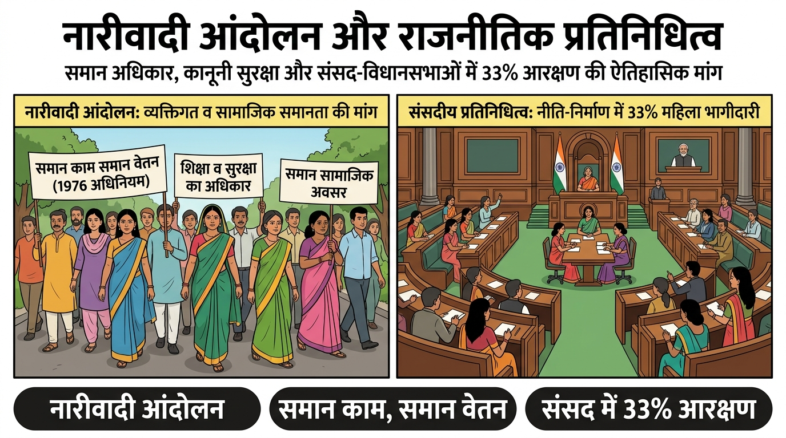
✊ चित्र 3.2: नारीवादी आंदोलन और राजनीतिक प्रतिनिधित्व (Women's Movements)
समान अधिकारों, सुरक्षा और संसद में नीति-निर्माण में भागीदारी के लिए संगठित लोकतांत्रिक संघर्ष।
संसद और विधानसभाओं में महिलाओं की हिस्सेदारी बहुत कम रही है (लोकसभा में 14.36% और विधानसभाओं में 5% से कम)। NCERT पेज 44 का कार्टून दर्शाता है कि कैसे पुरुष-प्रधान राजनीति ने दशकों तक 33% महिला आरक्षण विधेयक को लटकाए रखा।
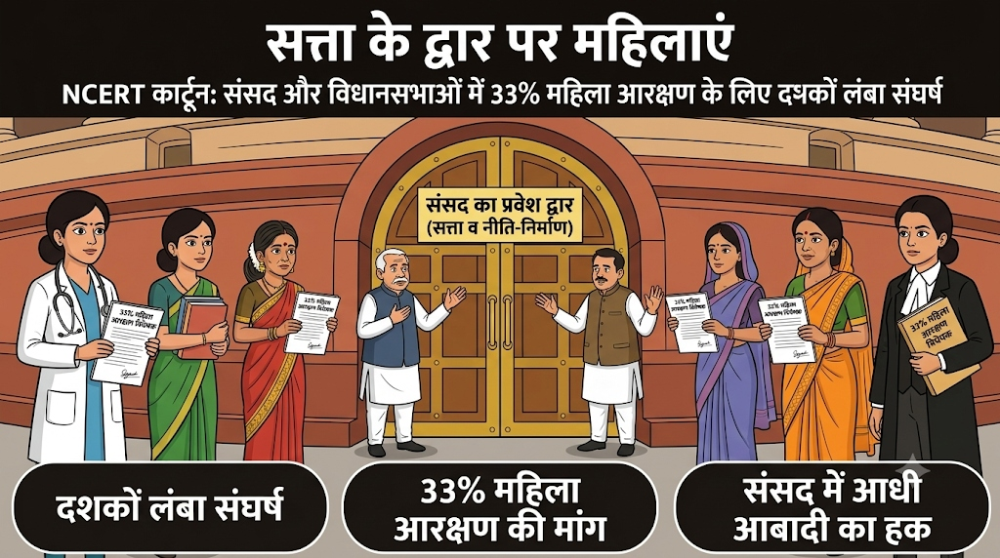
🚪 चित्र 3.11: NCERT कार्टून - सत्ता के द्वार पर महिलाएं (Women at the Door of Power)
संसद के बंद द्वार के बाहर खड़ी डॉक्टर, वकील, शिक्षिका और ग्रामीण महिलाएं - 33% आरक्षण का लंबा संघर्ष।
गांधीजी कहते थे कि "धर्म को राजनीति से अलग नहीं किया जा सकता।" परंतु उनके लिए धर्म का अर्थ कोई संकीर्ण पंथ या पूजा-पद्धति नहीं था, बल्कि सार्वभौमिक नैतिक मूल्य (सत्य, अहिंसा, करुणा व न्याय) थे, जो सभी धर्मों का मूल हैं।
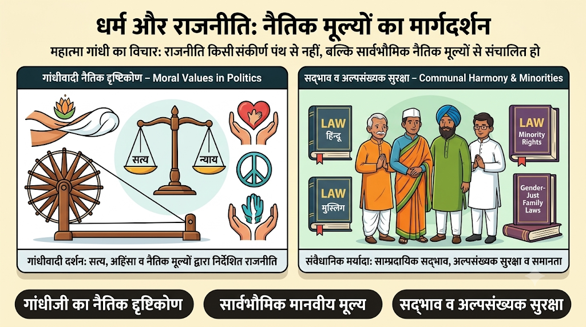
🕊️ चित्र 3.12: धर्म और राजनीति - महात्मा गांधी का नैतिक दर्शन (Moral Values in Politics)
गांधीवादी चरखा, सत्य व न्याय की तराजू और सभी आस्थाओं के नागरिकों का आपसी सद्भाव व अल्पसंख्यक सुरक्षा।
जब धर्म को राष्ट्र और राजनीति का आधार बना दिया जाता है और एक धर्म के लोगों को दूसरे से श्रेष्ठ बताया जाता है, तो उसे साम्प्रदायिकता (Communalism) कहते हैं:
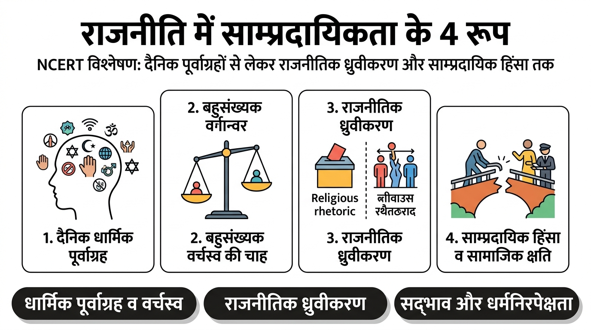
🔥 चित्र 3.3: राजनीति में साम्प्रदायिकता के 4 रूप (Four Forms of Communalism)
दैनिक धार्मिक पूर्वाग्रह, बहुसंख्यक वर्चस्व की चाह, चुनावी ध्रुवीकरण व बयानबाज़ी, तथा साम्प्रदायिक हिंसा।
साम्प्रदायिकता की संकीर्ण मानसिकता लोगों को "मेरा धर्म अच्छा, दूसरा धर्म खराब" के झगड़े में उलझाकर रखती है, जिससे टूटे स्कूल, बेरोजगारी, महंगे इलाज और महंगाई जैसे जनता के मूल जीवन-मरण के मुद्दे दब जाते हैं।
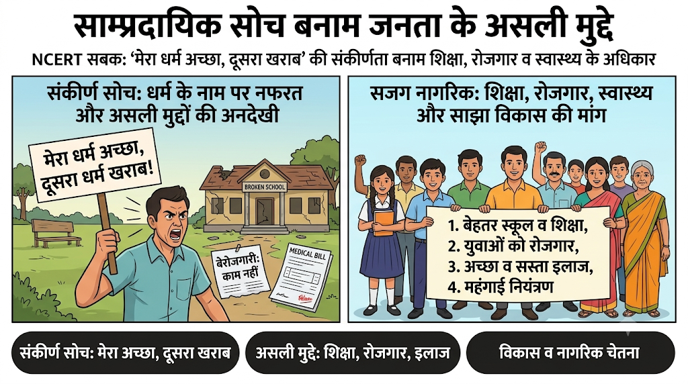
🏫 चित्र 3.13: साम्प्रदायिक सोच बनाम जनता के असली मुद्दे (Communal Mindset vs Real Civic Issues)
'मेरा धर्म अच्छा, दूसरा खराब' की संकीर्ण तख्ती बनाम छात्रों व नागरिकों की शिक्षा, रोजगार व स्वास्थ्य की मांग।
चुनावों में जीत हासिल करने के लिए जब राजनेता धार्मिक भय पैदा करते हैं और "धर्म खतरे में है" जैसे भावनात्मक नारों से वोट बैंक बनाते हैं, तो जागरूक मतदाता विकास और काम के आधार पर हिसाब मांगते हैं।
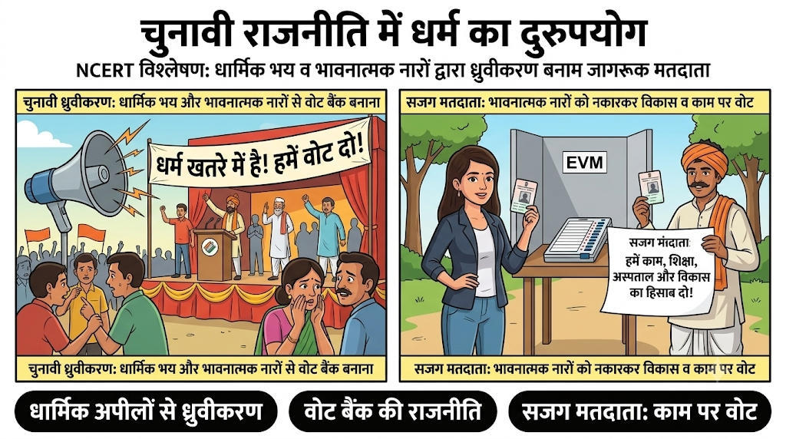
🗳️ चित्र 3.14: चुनावी राजनीति में धर्म का दुरुपयोग (Religious Mobilisation in Elections)
मंच पर "धर्म खतरे में है! हमें वोट दो!" का ध्रुवीकरण बनाम ईवीएम पर काम और विकास पर हिसाब मांगता जागरूक मतदाता।
भारतीय समाज की मूल ताकत साम्प्रदायिक सद्भाव है, जहाँ विभिन्न धर्मों के पड़ोसी एक-दूसरे के सुख-दुख में साथ देते हैं, ईद-दिवाली मिलकर मनाते हैं और अनेकता में एकता को संजोते हैं।
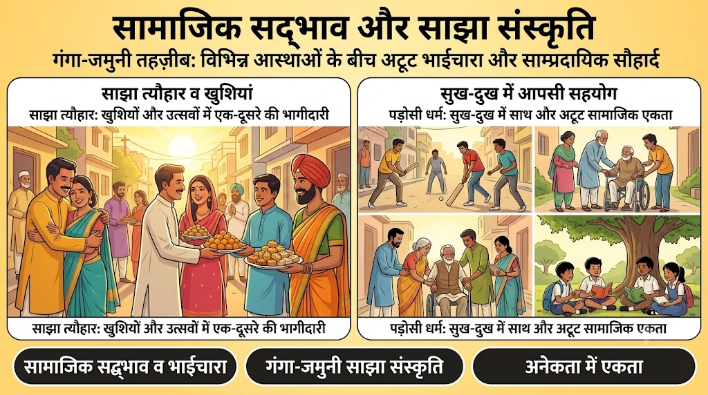
🌸 चित्र 3.15: सामाजिक सद्भाव और साझा संस्कृति (Ganga-Jamuni Tehzeeb)
पड़ोसियों का साझा त्यौहार मनाना, मिठाइयाँ बांटना और मोहल्ले में बुजुर्गों व बच्चों की आपसी देखभाल।
साम्प्रदायिकता के खतरे से देश की रक्षा के लिए हमारे संविधान ने भारत को धर्मनिरपेक्ष राज्य घोषित किया है। इसके 4 प्रमुख आधार स्तंभ हैं:
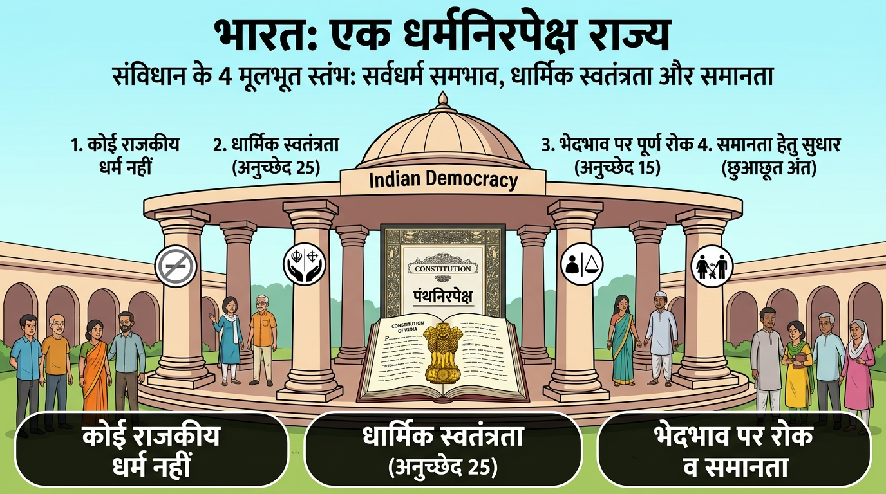
🏛️ चित्र 3.4: भारत: एक धर्मनिरपेक्ष राज्य (4 Constitutional Pillars)
कोई राजकीय धर्म नहीं, धार्मिक स्वतंत्रता (अनु. 25), भेदभाव पर रोक (अनु. 15), और समानता हेतु सुधारात्मक हस्तक्षेप।
| स्तम्भ |
संवैधानिक प्रावधान |
व्यावहारिक अर्थ |
| 1. कोई राजकीय धर्म नहीं |
संविधान की प्रस्तावना |
श्रीलंका (बौद्ध धर्म), पाकिस्तान (इस्लाम) या ब्रिटेन (ईसाई धर्म) की तरह भारत का कोई राष्ट्रीय धर्म नहीं है। |
| 2. धार्मिक स्वतंत्रता |
अनुच्छेद 25 से 28 |
सभी नागरिकों को किसी भी धर्म को मानने, आचरण करने और उसका प्रचार करने की पूर्ण आजादी है। |
| 3. भेदभाव पर रोक |
अनुच्छेद 15 |
धर्म के आधार पर किसी भी नागरिक के साथ किसी भी क्षेत्र में कोई भेदभाव नहीं किया जा सकता। |
| 4. सुधारात्मक हस्तक्षेप |
अनुच्छेद 17 व कानून |
धार्मिक कुरीतियों (जैसे छुआछूत, बाल विवाह) को समाप्त करने के लिए राज्य को सुधार करने का अधिकार है। |
भारत में जातिगत संकीर्णता और छुआछूत के खिलाफ महान समाज सुधारकों ने लंबा आंदोलन चलाया:
- महात्मा ज्योतिबा फुले: सत्यशोधक समाज की स्थापना, शूद्रों व बालिकाओं की शिक्षा के अग्रदूत।
- महात्मा गांधी: अस्पृश्यता उन्मूलन और समाज में मानवीय सम्मान की पुनर्स्थापना।
- डॉ. बी.आर. अम्बेडकर: संविधान सभा की प्रारूप समिति के अध्यक्ष, सामाजिक न्याय व समानता के जनक।
- स्वामी दयानंद सरस्वती: सामाजिक सुधार, वैदिक ज्ञान और जन्म-आधारित भेदभाव का विरोध।
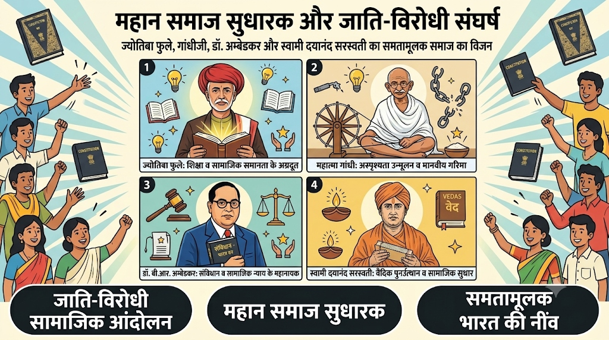
📜 चित्र 3.16: महान समाज सुधारक और जाति-विरोधी संघर्ष (Great Social Reformers)
ज्योतिबा फुले, गांधीजी, डॉ. अम्बेडकर और स्वामी दयानंद सरस्वती का समतामूलक समाज का विजन।
भारतीय संविधान का अनुच्छेद 17 छुआछूत (अस्पृश्यता) को पूरी तरह समाप्त करता है और इसका किसी भी रूप में आचरण दंडनीय अपराध घोषित किया गया है। अब सभी सार्वजनिक नल, कुएं, विद्यालय और धार्मिक स्थल सभी नागरिकों के लिए समान रूप से खुले हैं।
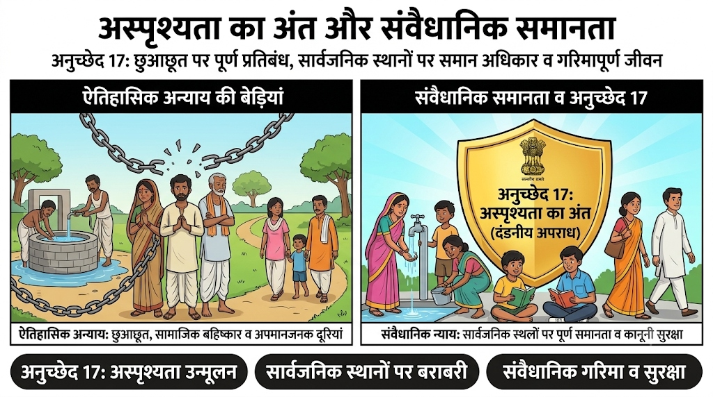
🛡️ चित्र 3.17: अस्पृश्यता का अंत और संवैधानिक समानता (Article 17 - Shield of Equality)
अन्याय की टूटती बेड़ियाँ और संविधान के अनुच्छेद 17 की ढाल के नीचे सार्वजनिक बराबरी व गरिमापूर्ण जीवन।
आधुनिक भारत में जाति व्यवस्था के पुराने बंधन ढीले पड़ने के 4 प्रमुख कारण हैं:
- शहरीकरण (Urbanization): शहरों में बसों, ट्रेनों, मेट्रो और दफ्तरों में लोग जाति पूछे बिना साथ बैठते हैं।
- शिक्षा व साक्षरता का प्रसार: वैज्ञानिक सोच और तार्किकता का विकास।
- व्यावसायिक गतिशीलता (Occupational Mobility): अब कोई भी व्यक्ति अपनी योग्यता से पेशा चुन सकता है।
- संवैधानिक प्रावधान: भेदभाव पर पूर्ण प्रतिबंध।
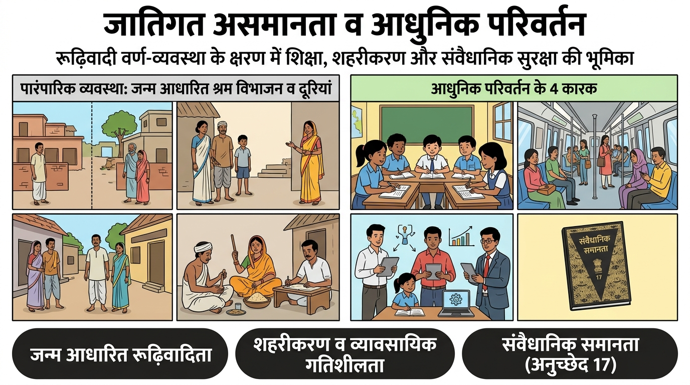
📈 चित्र 3.5: जातिगत असमानता व आधुनिक परिवर्तन (Social Transformation)
पारंपरिक सामाजिक दूरियों से आधुनिक शिक्षा, मेट्रो यात्रा, तकनीकी रोजगार और संवैधानिक समानता की ओर बदलाव।
NCERT पेज 51 का व्यंग्य-चित्र दिखाता है कि कैसे राजनीतिक दल चुनाव जीतने के लिए जातिगत तराजू पर मतदाताओं का प्रतिशत तौलते हैं, जबकि जागरूक जनता काम के आधार पर निर्णय लेती है।
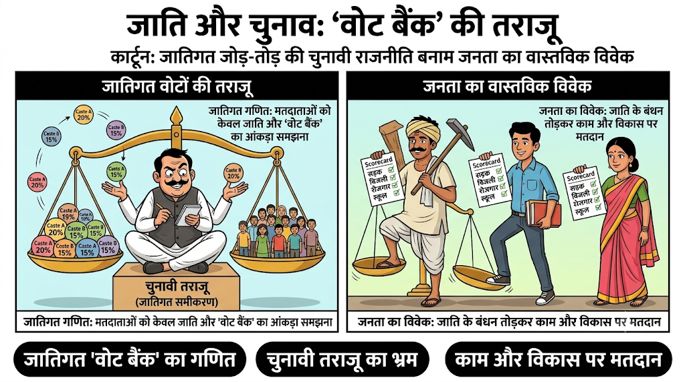
⚖️ चित्र 3.18: NCERT कार्टून - जाति और चुनाव: 'वोट बैंक' की तराजू (The Caste Scale Cartoon)
तराजू पर जातिगत प्रतिशत तौलता रणनीतिकार बनाम स्कोरकार्ड (सड़क, बिजली, रोजगार, स्कूल) लेकर खड़ा जागरूक नागरिक।
⚡ बोर्ड परीक्षा का 5 अंकीय प्रश्न: "चुनाव केवल जाति के दम पर नहीं जीते जा सकते, क्यों?"
- किसी एक जाति का पूर्ण बहुमत नहीं: देश के किसी भी संसदीय क्षेत्र में एक अकेली जाति का बहुमत नहीं है; जीतने के लिए सभी जातियों का विश्वास चाहिए।
- एक ही जाति के कई प्रत्याशी: प्रभुत्व वाली जाति के सामने सभी प्रमुख दल उसी जाति के उम्मीदवार खड़े कर देते हैं, जिससे वोट बंट जाते हैं।
- सत्तारूढ़ सांसदों/विधायकों की हार: हमारे देश में मौजूदा सांसद और विधायक नियमित चुनाव हारते हैं। यदि केवल जाति ही सब कुछ तय करती तो कोई मौजूदा नेता कभी नहीं हारता।
- काम और विकास निर्णायक: मतदाता सरकार के काम, महंगाई, सड़क, बिजली और कल्याणकारी योजनाओं को देखकर मतदान करते हैं।
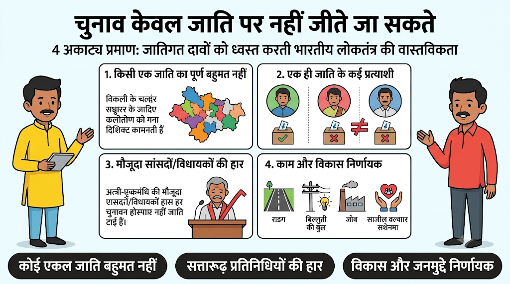
📊 चित्र 3.19: चुनाव केवल जाति पर नहीं जीते जा सकते (4 NCERT Arguments)
कोई एकल जाति बहुमत नहीं, एक ही जाति के कई प्रत्याशी, मौजूदा नेताओं की हार, तथा विकास और काम निर्णायक।
लोकतंत्र में केवल राजनीति ही जाति को प्रभावित नहीं करती, बल्कि जाति भी राजनीति में आकर बदलती है:
- जातियों का विस्तार: जातियां अपने साथ जुड़ी उप-जातियों को जोड़कर अपना दायरा बड़ा बनाती हैं।
- गठबंधन: सत्ता में हिस्सेदारी के लिए विभिन्न जातियां आपस में समझौते और राजनीतिक गठबंधन करती हैं।
- नई श्रेणियां: राजनीति के कारण समाज में 'अगड़ी' और 'पिछड़ी' जातियों की नई चेतना पैदा हुई है।
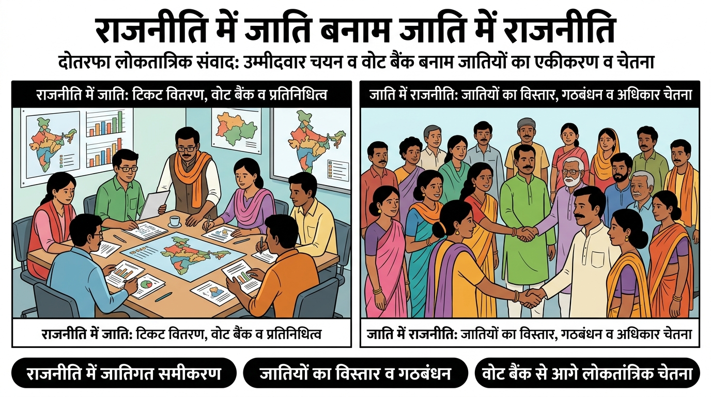
🔄 चित्र 3.6: राजनीति में जाति बनाम जाति में राजनीति (Two-Way Democratic Process)
टिकट वितरण व वोट बैंक समीकरण बनाम जातियों का विस्तार, गठबंधन और वंचित वर्गों में अधिकार चेतना।
NCERT पेज 53 का अंतिम निष्कर्ष सावधान करता है कि जब राजनीति केवल जाति के संकीर्ण दायरे में सिमट जाती है, तो समाज में तनाव बढ़ता है और गरीबी, शिक्षा व स्वास्थ्य जैसे वास्तविक मुद्दे पीछे छूट जाते हैं।
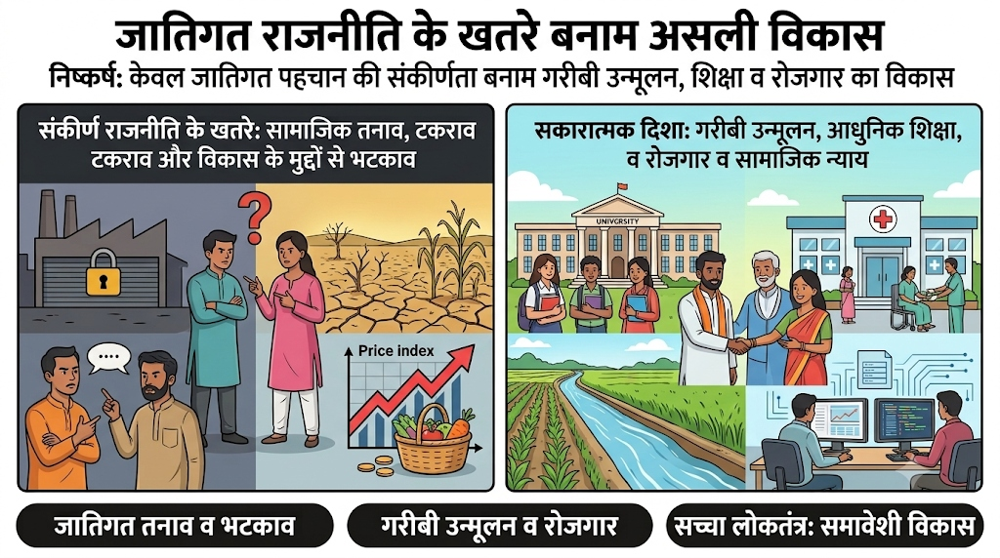
⚠️ चित्र 3.20: जातिगत राजनीति के खतरे बनाम असली विकास (NCERT Concluding Warning)
संकीर्ण राजनीति के खतरे (सामाजिक तनाव, बंद फैक्ट्री, सूखा) बनाम सच्चा लोकतंत्र (यूनिवर्सिटी, अस्पताल, नहरी सिंचाई व रोजगार)।
भारतीय लोकतंत्र की अंतिम सफलता इसी में है कि लैंगिक समानता, सर्वधर्म समभाव और सामाजिक न्याय एक साथ मिलकर देश को आगे ले जाएँ।
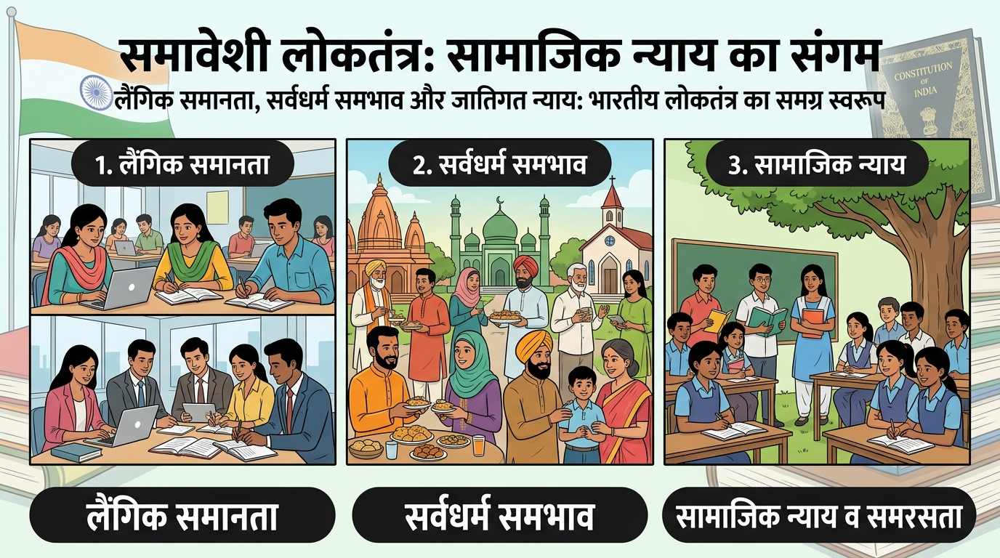
🤝 चित्र 3.7: समावेशी लोकतंत्र: सामाजिक न्याय का संगम (Convergence of Social Justice)
लैंगिक समानता (शिक्षा व अवसर), सर्वधर्म समभाव (शांति व सद्भाव) और सामाजिक न्याय (संवैधानिक समरसता) का त्रिवेणी संगम।
💡 बोर्ड परीक्षा हेतु अति-महत्वपूर्ण त्वरित स्मरणीय तथ्य (Quick Exam Takeaways)
- श्रम का लैंगिक विभाजन: घर के सारे काम महिलाओं के जिम्मे और बाहर के काम पुरुषों के जिम्मे।
- समान पारिश्रमिक अधिनियम, 1976: समान काम के लिए समान वेतन की कानूनी गारंटी।
- नारी शक्ति वंदन अधिनियम: संसद और विधानसभाओं में महिलाओं हेतु 33% आरक्षित सीटें।
- गांधीजी का विचार: राजनीति को किसी संकीर्ण पंथ से नहीं, बल्कि धर्म से प्राप्त सार्वभौमिक नैतिक मूल्यों से संचालित होना चाहिए।
- साम्प्रदायिकता (Communalism): जब धर्म को राजनीति का आधार मानकर एक धर्म को दूसरे से श्रेष्ठ माना जाए।
- धर्मनिरपेक्ष राज्य के 4 स्तंभ: कोई राजकीय धर्म नहीं, धार्मिक स्वतंत्रता (अनु. 25), भेदभाव पर रोक (अनु. 15), और सुधारात्मक हस्तक्षेप।
- अनुच्छेद 17: अस्पृश्यता (छुआछूत) का पूर्ण उन्मूलन व इसे दंडनीय अपराध घोषित करना।
- व्यावसायिक गतिशीलता: नई पीढ़ी द्वारा पुरानी पुश्तैनी जातिगत पेशों को छोड़कर नए आधुनिक पेशे अपनाना।
- चुनाव केवल जाति पर नहीं जीते जा सकते: किसी एक जाति का पूर्ण बहुमत न होना, कई प्रत्याशियों का होना, मौजूदा नेताओं की हार, और विकास के मुद्दे।